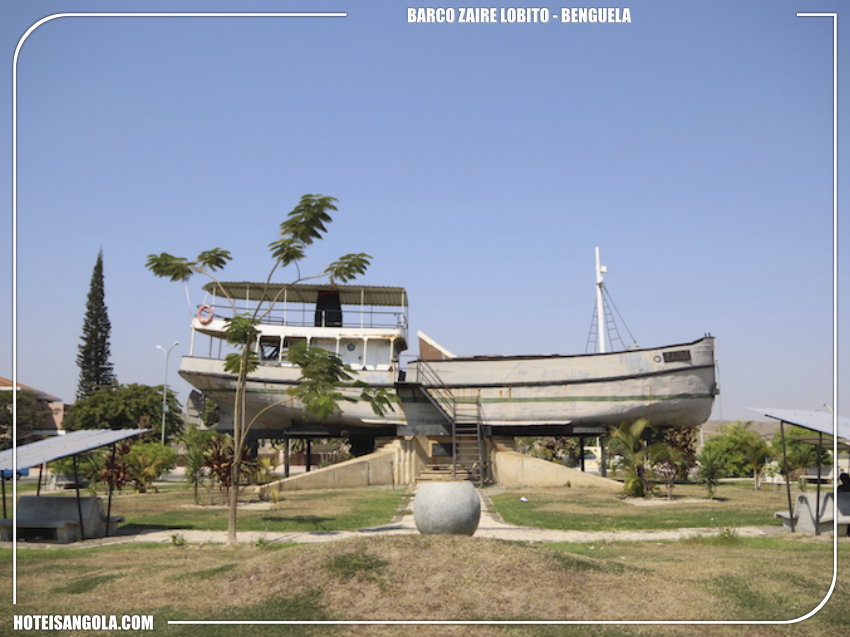
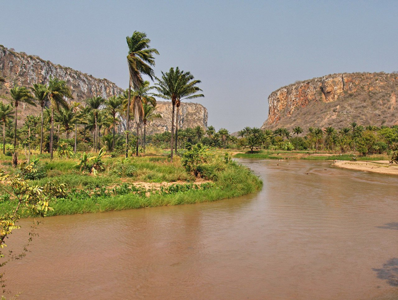
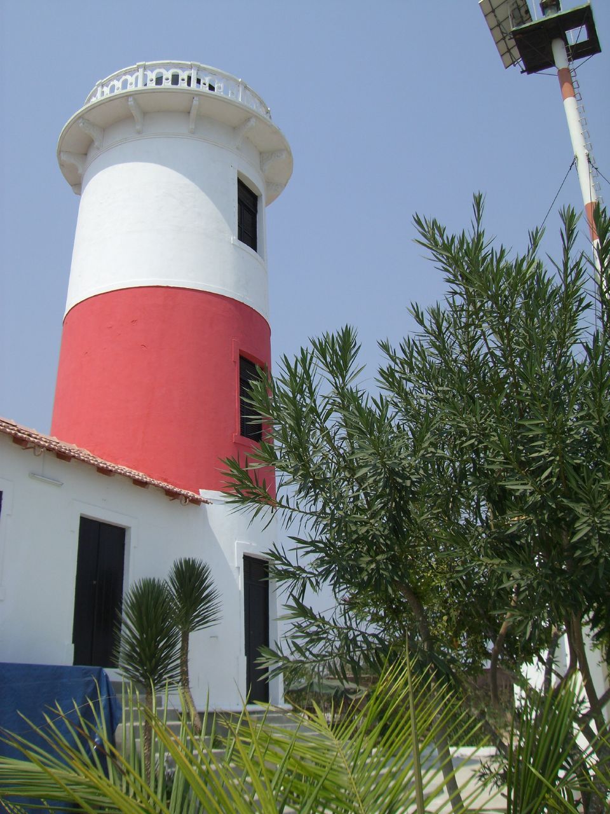

Pontos histórico
história do Barco
Dados bibliográficos indicam que o barco “Zaire” foi utilizado no transporte do ex-Presidente José Eduardo dos Santos e mais seis companheiros, sem mencioná-los, com destino ao Congo Léopoldville, actual Congo Democrático, para integrarem o Exército de Libertação de Angola (ELPA), antigo braço armado do Movimento Popular de Libertação de Angola (MPLA). Inaugurado no dia 15 de Novembro de 2000, o barco “Zaire” funcionou como biblioteca até meados de Março de 2017, com cinco funcionárias, entre bibliotecárias e guias para os visitantes. Daquela data até ao momento, encontra-se “semiabandonado” por falta de manutenção e outros cuidados merecidos por um símbolo nacional, que é património de todos os angolanos.
O Egipto praia
onde desagua o Rio Balombo, é um local de paisagem mística que nos reporta para o Egipto. As arribas e falésias em torno da praia, que lhe conferem a sua real beleza, fazem lembrar a paisagem egípcia. O Egipto Praia fica a norte da Província de Benguela, relativamente perto da cidade do Lobito.
O Farol do Lobito
é um farol angolano localizado no cimo das escarpas no lado este da entrada do porto e baía de Lobito, em frente à ponta
da restinga, a norte da cidade de mesmo nome, província de Benguela. Torre cilíndrica em alvenaria, com galeria e lanterna,
junto duma pequena casa de faroleiros. Farol pintado de branco com uma larga barra vermelha.

Conforme se pode ver nas fotografias, a lanterna parece estar, pelo menos desde 1999, no cimo de um poste branco
com estreitas faixas vermelhas, a pouca distância do farol primitivo, alimentada a energia solar. O porto do Lobito
é o término do famoso Caminho de Ferro de Benguela, que serve as minas da Zâmbia e o sudoeste da República Democrática
do Congo. Cronologia •1915 - construção •1995 - o farol encontrava-se muito danificado, devido ao período da guerra
civil •1999 - o farol já não possui lanterna, estando a luz num poste a po
uca distancia do farol primitivo •2004/2007
- lindamente restaurado •2007 - farol concessionado, o que gara
nte a sua conservação, sendo usado como casa de fim de semana.
Informações Operacional: Ajuda ativa à navegação Acesso: Em 4x4 a cerca de 14 K
m do centro de Lobito Aberto ao público: local
aberto, torre fechada Nº Internacional: D-5280; Nº NGA: 25640 Nº ARLHS: ANO-008[
Nos seus 106 anos de idade, é uma cidade jovem e moderna, bonit
a e simpática, sossegada, acolhedora, organizada,
de portas abertas aos seus visitantes, com as suas belas praias da Restinga, pon
tos turísticos (miradouros, fortes
e parques florestais), o carnaval, o folclore e uma competente rede hote
leira e de transportes públicos e privados.
É de facto “a sala de visitas de Angola”! A origem do nome
A origem do nome Lobito provém da palavra em língua umbundu Pitu, antecedida da partícula classificativa Olu, o que r
esulta em Olupitu, que significa “porta, passadiço, passagem”, que as caravanas de car
regadores, ao descer dos morros
vindos do interior, percorriam antes de atingirem a “praça comercial” da Catumbela. Com o andar do tempo, de Olupitu
o nome passou para Lupitu e, daí, acabou finalmente por ser aportuguesado para Lobito.
Um pouco da sua história